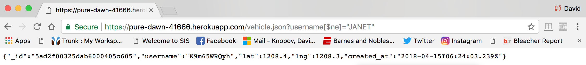

I have been hired as a security consultant to document and resolve the security and privacy issues in the not uber server Implemented by Cheng, Cheuk Him Benson. The not uber project is a project in which there are vehicles and passengers, whos username,lat, lng gets sent to a server and the server gives back information of the opposite type. The not uber service then displays a map of all the opposite types ( if you are vehicle then it displays you and passengers around you)
First, I performed attacks before reading my partner's source code. This is regarded to as "black box" testing. Then I looked at the source code of the application, performed a manual code review of it, and attacked it via 2 methods that I will explain earlier ( this is called "white box" testing)
The main vulnerabilities found was user input. As Ming mentioned in class, never trust the user input. These vulnerabilities were shown through Cross Site Scripting and NoSQL injections which I will explain in the next section. In short, the creator of the server did not do enough security in checking the user input , which lead to a very easy path into hacking his web server.
Another vulnerability I found was the fact that there was too much information given to me within the source code. I will explain all of my findings in detail in the next section
1. Cross-Side Scripting Issue found in home directory ( passenger list):
homepage
To find this security bug, I typed in the following in curl:
This produced the following image outcome:
This is an example of a Cross Side Scripting attack. I modified the username parameter to display an alert message. I actually inserted a java script alert message within my username data for curl. This script message made the server believe that this code was written within the original
server's code which made the alert occur. This is HIGH severity because I basically broke the passenger list, or the home directory. Now whenever
you enter the server's home page there is an alert that pops up and reads "hacked" , which will certainly make user's stay away from the site.

3a. NoSQL database injection with [$ne] found in /vehicle.json page:
vehicle.json page
I used this method to find a failure in the page:
Here is my input in the vehicle.json and the result. You can see the error here ( pay attention to ne tag).

What I did here is include the ne tag in Mongodb which means not equal. By typing this in before typing in JANET ( a vehicle ) I manipulated the mongo database to not search for Janet but search for any other vehicle that has the name not equal to JANET ( this is what hte $ne tag does). This gave me access to finding the information for the vehicle shown above. The Severity for this is HIGH because I only knew JANET was in the database , and I should
only be able to access her information, yet with this quick command I found another vehicle's information which should be kept private.
3b. We can also do a NoSQL injection with [$ge] tag. This points out the same NoSQL issue is found in vehicle.json page in 3a.
I did the same thing with ge, which means greater than. By running curl with $ge and a blank string as showin in the image.
, any real string would be "greater than"
the empty string so I again got the same information I got with the $ne tag.
This is HIGH Severity since I did not know of any vehicles in the
data base yet I got information on a vehicle I did not know existed by a simple tag. This is very scary for the user's information in the data base.
Here is the image:
Resolution: Again this has to deal with user input. I suggest more strict input handling from the user. Mongo-sanitize is a usefull mogno tool to handle fowl inputs. This tool strips out any $ in inputs. There is a helpful tool called Joi which helps with this issue that the creator of the server should look in to. Also Sqreen is another usefull tool. In general just be more on top of what inputs really get passed into your
database when you use find or insert.
In Conclusion , the server I was evaluating did a great job on functionality, I could not find anything wrong by black box testing, until I read the documentation to do NoSQL injections and Cross Site Scripting Attacks. My biggest advice to the creator is to never trust user input and really focus on attacking the input provided, breaking it down, and making sure it is in fact Alphanumeric with no $ne or $ge or scripts , etc.